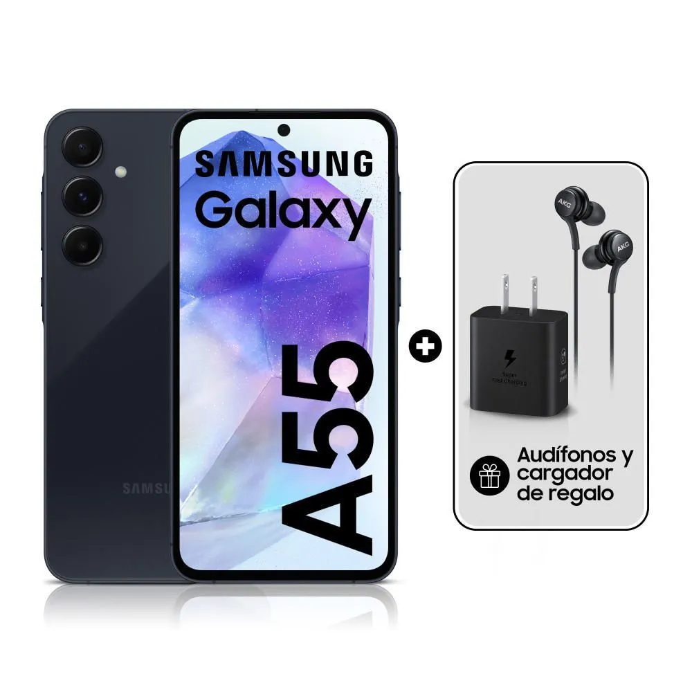
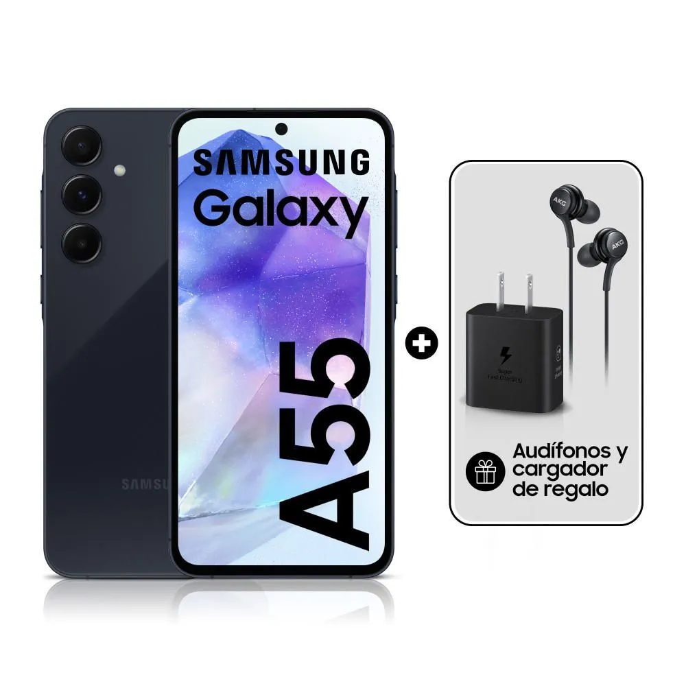

Samsung S24 Ultra
Si me preguntas cuál fue el mejor móvil Android en 2023 mi respuesta es tajante: el Samsung Galaxy S23 Ultra. Tras haber probado toda la gama alta del año pasado, bajo mi criterio no hubo un solo modelo que se le acercase en equilibrio general. El reto del nuevo Samsung Galaxy S24 Ultra no es menor. Es un móvil cuya única misión es la de hacerse con el trono de mejor teléfono de 2024.

 
